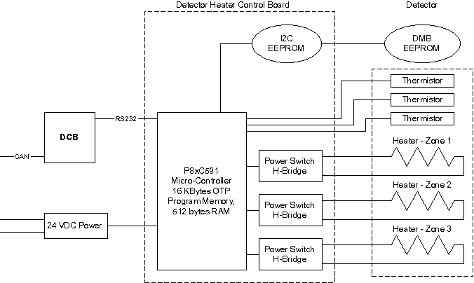

Operating Documentation
Direction 5196839-800, Rev# 6
RT16 and Xtra Service Info Adv
Operating Documentation |
| Last Revised: | February 2003 |
In order to obtain consistent and accurate results, the detector must be kept at a constant temperature. The detector temperature is maintained by hardware circuits on the Detector Heater Control Board (DHCB) . The heater is supplied power by the DHCB, while the DHCB gets power from the external 24V power supply, same as the LightSpeed 16. This differs from LightSpeed and LightSpeed Plus, where the detector heater control and power were supplied by the DCB.
The DHCB monitors detector temperature via the three thermistors embedded in the external rail of the detector. Hardware circuits on the analog section of the DHCB convert thermistor resistance into a digital value that represents the detector temperature. These digital values are kept in a register on the DHCB, and temperature values are averaged over 10 samples. The output is then compared with upper and lower limits. When the temperature value goes below the lower limit, the DHCB enables the heater power supply via a HTR_ON signal. When the temperature value goes above the upper limit, the DHCB turns the heater power off. In this way, the DHCB can keep the detector at a constant temperature.
Illustration 1: Detector Heater Control

The modules in the detector system are maintained at a temperature of 36 ± 0.3 degrees C (module to module variation) and to 36 ± 0.05 degree C (near thermistor).
The primary function, provided by the 8xC591 micro-controller, is to perform basic control and monitor of temperature in three zones of the LIghtSpeed 16 detector and report status, faults and errors to the system via the DCB.
The 8xC591 micro-controller is responsible for providing the following functions:
Power-On Self-Test
Board Initialization
Communication
DMB EEPROM Access
DHCB EEPROM Access
Fault Detection and reporting
Firmware Revision reporting
At the time of power-on or board reset, the micro-controller will perform 2 tests.
The micro-controller’s RAM will be checked for proper operation by writing and reading back various patterns.
A checksum verification of the application firmware will be performed. If either of these tests fail the converter card application firmware can not be executed. To indicate this failure the LED will flash rapidly at a 5 Hz rate. This LED will continue to flash until communication with the DCB is established.
If either of the 2 tests fails, the FW will disable all heater outputs.
After power-up or rest, the micro-controller’s firmware will perform its initialization functions that are partitioned into 5 tasks - hardware initialization, DMB memory validation, communication, parameter, and CPU Watchdog initialization.
The DCB establishes communication with the DHCB via the RS232 communication interface. The Communication link is a Master (DCB) / Slave (DHCB) configuration. Therefore, the DCB initiates all communication and the DHCB simply responds.
Upon initialization, the temperature control tables in both the DMB and DHCB are accessed and their respective checksums are validated. If either table fails its checksum test, the appropriate error bits are masked into the DHCB.
The general philosophy of status and fault handling is that when a change in status or fault occurs, the associated Status/error flag is set. When the DCB queries the DHCB, the status/error bit mask is sent to the DCB and depending on the type of error, the appropriate action is then taken.
Each DHCB condition/fault is represented in a status/error bit map.
Status/Error Flags
The following are Status/Error Flags. The LED will flash per the table below (i.e., if we have a DHCB EEPROM, the LED will flash twice, then pause off, then repeat).
Table 1: DHCB Error Code and LED Display
| Status/Error Code | Number of Flashes | Description |
|---|---|---|
| 0x0000 | None | No Error |
| 0x0001 | 1 | General Error. |
| 0x0002 | 2 | I2C Error |
| 0x0004 | 3 | EEPROM Readback Verify Error |
| 0x0008 | 4 | On-Detector EEPROM Error |
| 0x0010 | 5 | On-Board EEPROM Error |
| 0x0020 | 6 | Spare-1 Error |
| 0x0040 | 7 | Spare-2 Error |
| 0x0080 | 8 | Spare-3 Error |
| 0x0100 | 9 | Serial Rec Timeout Error |
| 0x0200 | 10 | Sensor and/or Control Abort Fault |
| 0x0400 | 11 | DHCB Mfg. Identification Table in EEPROM is invalid |
| 0x0800 | 12 | Temperature Control Table in EEPROM is invalid |
| 0x1000 | 13 | I2C ADC Failure |
| 0x2000 | 14 | Clock Loss Logic Error |
| 0x4000 | 15 | DHCB is in Service Mode |
| 0x8000 | 16 | Reset Occurred |